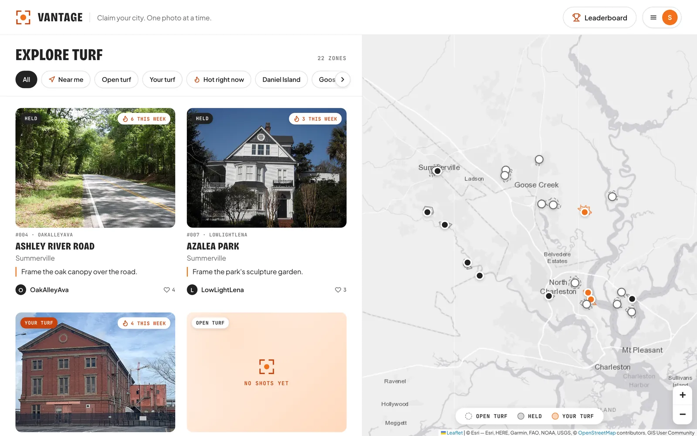
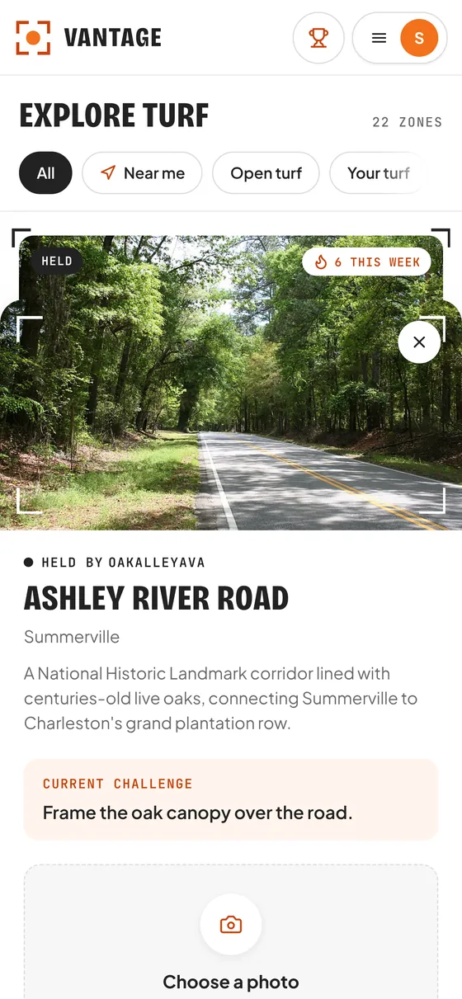
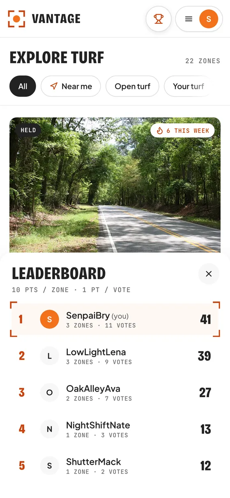
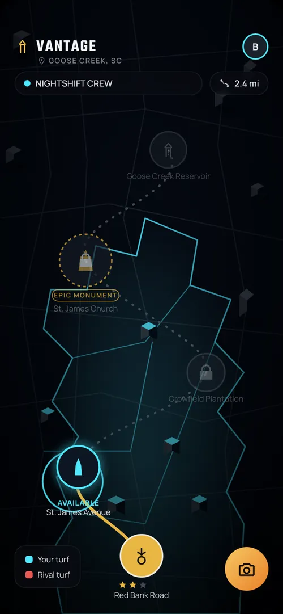
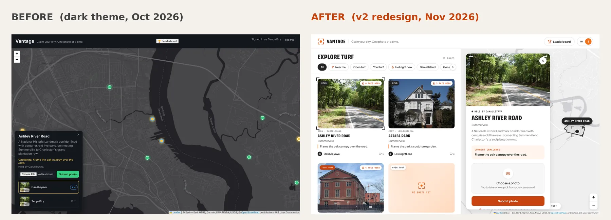

Vantage
A web game that turns street photography into a turf war. Players win real places on a city map by taking the best photo there, and keep them until someone takes a better one.
- Role
- Solo: idea, design, build, deploy
- Timeline
- Sept to Nov 2026
- Stack
- Node.js, Express, SQLite
- Status
- Live, still adding features

The problem
I'm a photographer, and I know how easy it is to stop going out to shoot. Photo apps reward follower counts, not getting out into your own city, and there's no local, friendly competition.
Battling in dance cyphers taught me how hard people push when someone can call them out. Vantage puts the two together: your city becomes a map of turf, and you hold a spot until someone beats your shot. The feel is inspired by the movie The Warriors.
Who it's for: hobby and street photographers who want a reason to get out and shoot. Play is asynchronous, so people join on their own schedule.
How a turn plays
- Find a zone. The map splits each city into zones around real landmarks.
- Shoot the challenge. Every zone has a photo prompt that changes every 72 hours, like "Frame the oak canopy over the road." The photo only counts if your phone shows you're standing inside the zone.
- The community votes. One vote per photo, and you can't vote for your own.
- Hold the turf. The top-voted photo holds the zone. You earn 10 points per zone held plus 1 point per vote, and you keep the zone until someone beats your shot.


What's built
- A real map with 22 zones around landmarks in four Charleston-area cities.
- Street-based borders generated from OpenStreetMap road data. Each zone ends at major roads, about half a mile across at most, and no zones overlap.
- Accounts with hashed passwords and login tokens.
- A geofence that checks the player's GPS location against the zone border, with 30 meters of room for GPS drift.
- Photo uploads, voting and a leaderboard.
- An explore feed with filters (Near me, Open turf, Your turf, Hot right now, by city) and a list/map switch on phones.
- Player profiles with stats, the turf each player holds and all their photos.
- Cheat protection. Every game rule is checked on the server, so sending requests straight to the API doesn't get around them.
Planned: crews for team play, a countdown to the next challenge, an in-app camera that records location at the moment of the shot, skill-based divisions and sponsored zones for local businesses.

My role
I'm the only person on this project. I came up with the concept, made the product and design decisions, and built it with an AI coding assistant (Claude) as a pair programmer.
- My decisions: the turf-war idea, the landmarks, the zone rules, the scoring formula, the 72-hour challenge rotation, the look and layout, and what to build next.
- Code I wrote: early on I typed the key code myself, including parts of the leaderboard's scoring API and frontend, and found and fixed my own bugs (a doubled route path, a misspelled function name, a missing
module.exports). - Later: the assistant wrote most of the code for the redesign, borders, geofence, feed and profiles. I reviewed it, tested it on my own machine, ran the data scripts, flagged design problems and committed every change.
- Shipping: I set up the GitHub repo, deployed to Railway, and bought and connected the domain.
Bry, fill this in: in two or three sentences of your own, describe how much of the code you wrote by hand and how much the AI wrote. Recruiters will ask, and an honest answer helps you.
Troubleshooting log
Twelve years as a diesel mechanic taught me to work a problem like a service manual: start with the symptom, find the cause, then fix it and test it. These were the biggest ones on Vantage.
| Symptom | Cause | Fix |
|---|---|---|
| Zones came out spiky and star-shaped | The first border builder drew shapes between points instead of following streets. | Rebuilt it to cut real street blocks with a geometry library, with special handling for big open areas like a military base and a golf course. Checked by code: no overlaps, every landmark inside its zone. |
| Usernames could run injected code | Player text was shown in the photo gallery without escaping (an XSS hole). | All player text is now escaped before it's shown. |
| Anyone could download files from the server | The server shared its whole code folder, database included. | Locked it down so only the public website files are served. |
| Players could skip the rules | Rules were only enforced by greyed-out buttons in the browser. | Moved every rule to the server and tested that direct API requests get rejected. |
| "429 Too Many Requests" and timeouts | Wikimedia and the OpenStreetMap download were rate-limiting my scripts. | Slowed the requests down and retried with longer waits each time. |
| Live site showed a 502 error | The domain pointed to the wrong port, and a "parked page" record was still in place. | Fixed the port and DNS records, and moved the database and photos to a disk that survives restarts. |
| Database library wouldn't install on Windows | No ready-made build existed for my Windows and Node version. | Updated to the latest version, which had one. |
How the design changed
The first concept was a dark "fog of war" map with crews and distance tracking. The first build used a dark theme. The v2 redesign moved to a light, photo-first layout so the players' photos do the talking.


Tech stack
- Languages: JavaScript, HTML, CSS, SQL
- Backend: Node.js and Express, one server for the API and the website
- Database: SQLite (better-sqlite3)
- Login and security: bcryptjs, JSON Web Tokens, dotenv
- Photo uploads: Multer
- Map: Leaflet.js with Esri tiles
- Map data: OpenStreetMap via the Overpass API, JSTS for geometry
- Frontend: plain JavaScript, no framework
- Hosting: Railway, with a Porkbun domain
About 6,600 lines of code across 20 commits.
What I learned
- How the browser and the server talk to each other through an API.
- How logins work: hashing passwords, issuing tokens and protecting routes.
- Never trust the browser. Any rule that matters gets checked on the server.
- Database basics: designing tables, using keys to enforce rules, changing structure without losing data.
- A Git workflow with one commit per working change and clear messages.
- Deploying a real app: hosting, persistent storage, DNS and custom domains.
- Working with outside APIs: rate limits, retries and crediting content.
What's next
- Test the geofence on a real phone at a real zone.
- Add a countdown to the next challenge.
- Fill the map with real photos, starting with my own.
- Build crews, so players can hold turf as a team.